I implemented a standard UNet following the classic encoder–decoder design:
multi-scale feature extraction through downsampling, a bottleneck with highest-level
feature aggregation, and upsampling with skip connections to restore spatial detail.
Key implementation considerations include:
Channel alignment: Downsampling typically doubles channels; upsampling must correctly match encoder features before concatenation.
Spatial alignment: Padding and stride must be designed so that spatial resolutions match for skip connections.
Consistent output shape: The final layer must produce a (N, 1, 28, 28) output for MNIST.
Modular design:ConvBlock, DownBlock, and UpBlock were separated to facilitate adding time- or class-conditioning later.
The two most common mistakes were mismatched skip-connection channels,
and forgetting to make the final convolution output a single-channel image.
A schematic of the UNet architecture
1.2 Using the UNet to Train a Denoiser
The UNet was trained as a denoising function: the input is a noisy image,
and the target is the corresponding clean image. The noise level (standard deviation)
was varied from 0 to 1 for visualization.
Visualization of the noising process from clean image to fully corrupted input.
1.2.1 Training
For a fixed noise level (σ = 0.5), the UNet was trained using MSE loss.
Below are denoising visualizations at epoch 1 and epoch 5, as well as the training loss curve.
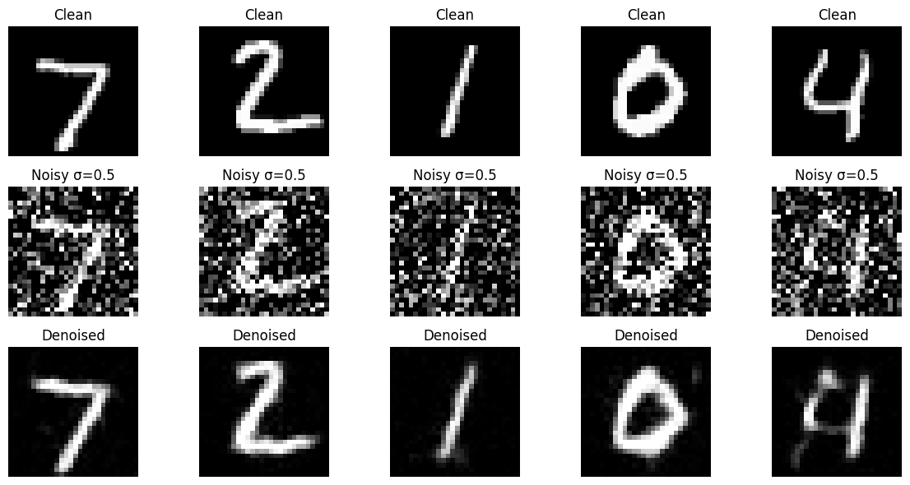
Epoch 1 denoising results. The coarse digit structure is visible, but fine details are not yet restored.
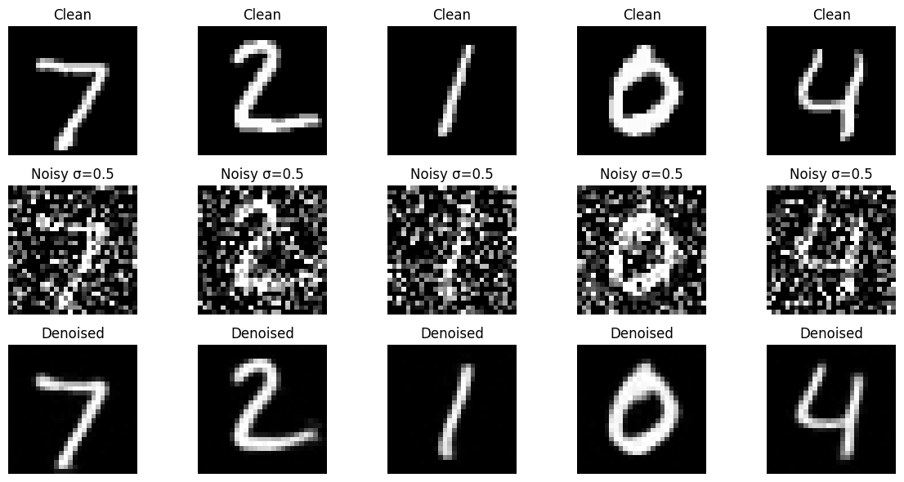
Epoch 5 denoising results. Edges are sharper and the background is cleaner compared to epoch 1.
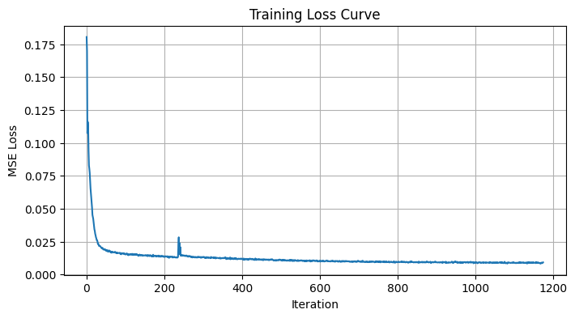
Training loss curve for σ = 0.5. Loss decreases steadily and flattens toward the end.
Common pitfalls:
Adding noise incorrectly during training (using a different σ than the test visualization).
Clamping only the noisy image while keeping the clean target unclamped, causing biased gradients.
1.2.2 Out-of-Distribution Testing
After training with σ = 0.5, I tested the model on noise levels outside the training distribution.
The same image was used while varying σ from 0 to 1.
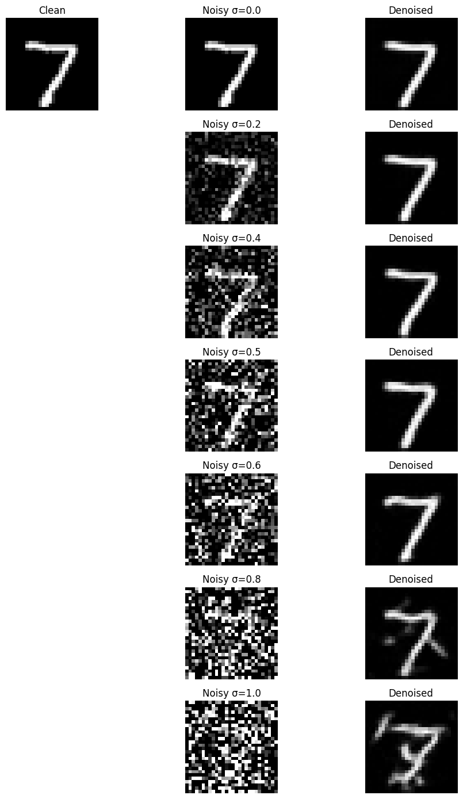
Denoising results across different noise levels. Performance is best near the training σ,
and degrades for both under- and over-noised inputs.
1.2.3 Denoising Pure Noise
In this section, the UNet attempts to denoise pure noise input.
This is a more difficult task and serves as a sanity check for overfitting and learning stability.
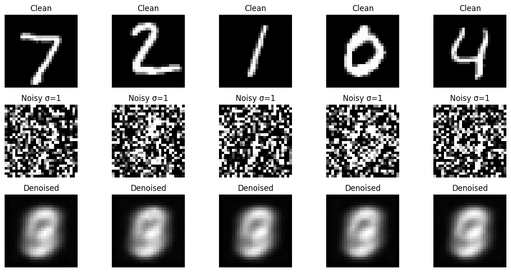
Epoch 1 denoising of pure noise. Output resembles a smoothed version of noise.
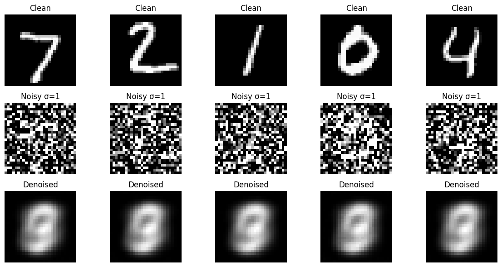
Epoch 5 results. Some pseudo-structures begin to appear as the model tries to find patterns.
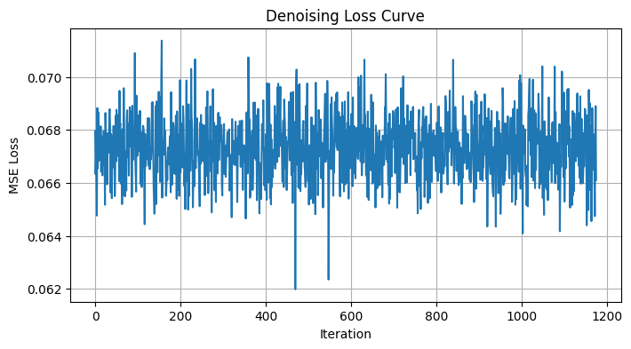
Loss curve for pure-noise denoising. More unstable compared to real-image denoising.
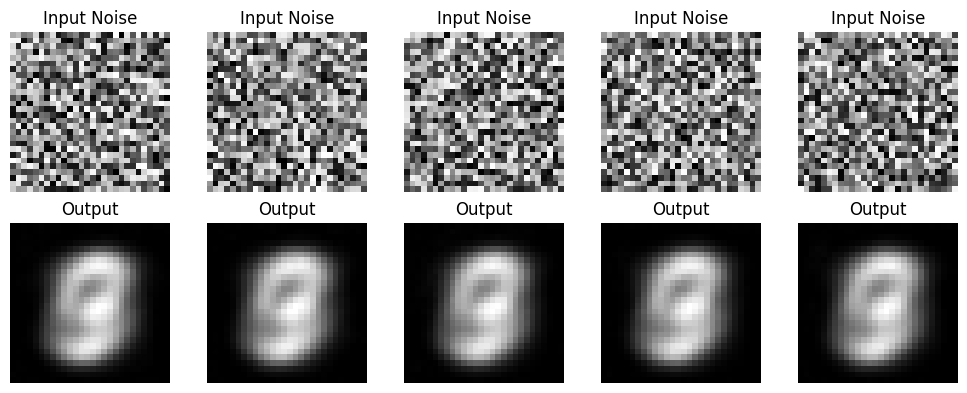
Sample outputs from pure-noise inputs. The model tends to output smoothed average-like patterns.
Part 2: Training a Flow Matching Model
In Part 2, the UNet is modified into time-conditioned and class-conditioned flow matching models.
The objective switches from predicting clean images to predicting the vector field
v = x₁ − x₀ that guides the ODE from noise to data.
Some observed patterns during generation:
Early epochs: Outputs are blurry; contours gradually emerge.
With time conditioning: Convergence speeds up because the model learns different denoising “speeds” at different time steps.
With class conditioning: Samples become significantly more structured even with fewer epochs.
CFG scale: Higher guidance improves class fidelity but may amplify noise artifacts.
2.1 Adding Time Conditioning to the UNet
Compared to the vanilla UNet, the time-conditioned version introduces:
Time-embedding FCBlocks:
Two MLPs FCBlock(1, 2D) and FCBlock(1, D) map normalized time t ∈ [0,1]
into per-channel modulation vectors.
Feature modulation:
Time embeddings modulate the bottleneck (b = b · t₁) and the first up-block (u₁ = u₁ · t₂).
Easy-to-make mistakes:
Using the wrong t shape: The FCBlock expects input (N,1).
Accidentally normalizing FCBlock outputs using .norm(): This destroys per-channel modulation.
Forgetting to normalize time: Time must be within [0,1] during both training and sampling.
A schematic of the UNet architecture added with Time Conditioning
2.2 Training the Time-Conditioned UNet
The model is trained to match the vector field x₁ − x₀.
The loss curve over the entire training process is shown below.
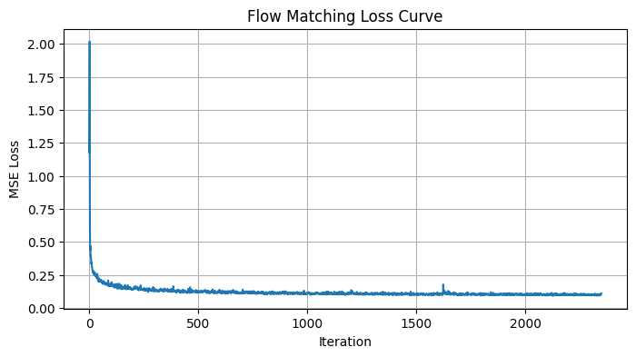
Loss curve for the time-conditioned Flow Matching UNet.
2.3 Sampling from the Time-Conditioned UNet
Sampling integrates the vector field via:
xₜ₊Δₜ = xₜ + v̂(xₜ, t) Δt,
starting from Gaussian noise. Below are results at 1, 5, and 10 epochs.
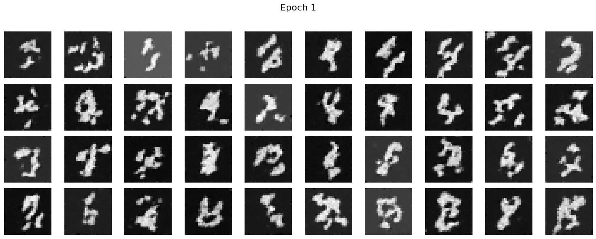
Samples after 1 epoch.
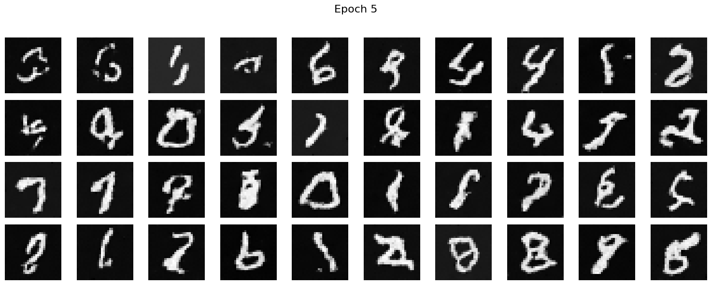
Samples after 5 epochs.
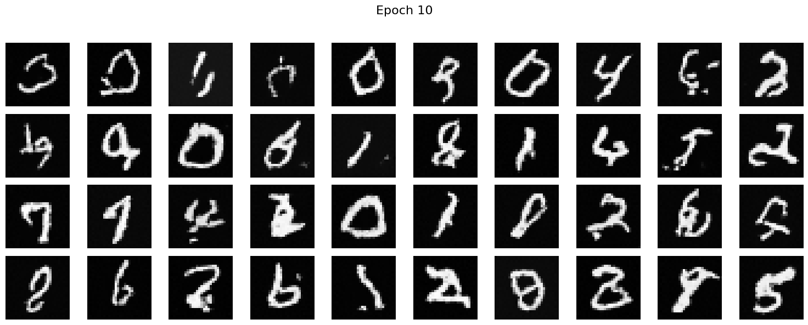
Samples after 10 epochs.
2.4 Adding Class Conditioning to the UNet
The class-conditioned model extends the time-conditioned model with:
One-hot class embedding: Labels 0–9 are mapped to 10-dim one-hot vectors, then to channel-wise modulation via FCBlock(10, 2D) and FCBlock(10, D).
Joint modulation: Unflatten and up-block features are modulated using both time and class embeddings.
Classifier-Free Guidance training: With probability p_uncond, the class vector is replaced with all zeros.
Common mistakes:
Using FCBlock(1,...) instead of FCBlock(10,...) for class embedding.
Multiplying masks incorrectly (mask=0 must produce an all-zero class vector).
Mismatching feature-map dimensions when injecting class modulation.
2.5 Training the Class-Conditioned UNet
Training Loss Curve
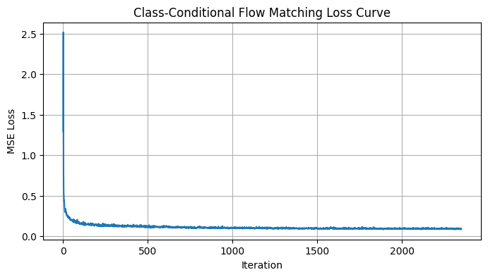
Loss curve for the class-conditioned Flow Matching UNet.
Sampling Results
Four samples for each digit (0–9) are generated after 1, 5, and 10 epochs.
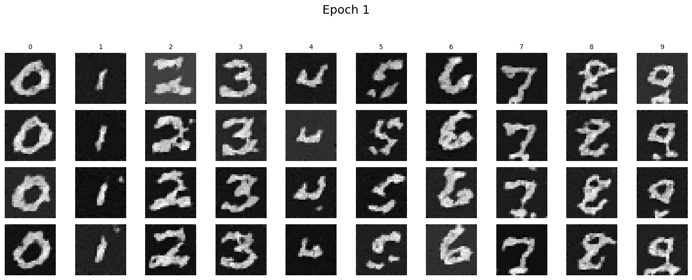
Samples after 1 epoch.
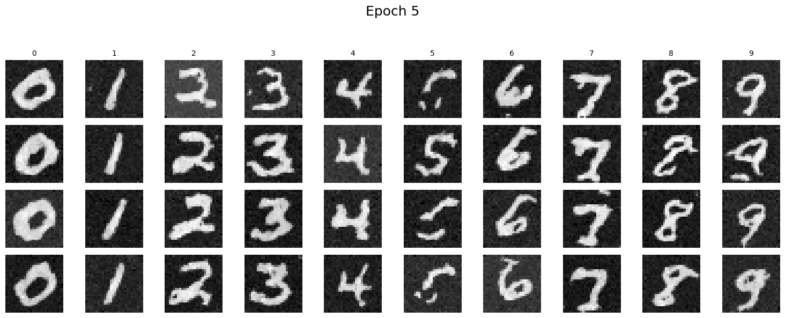
Samples after 5 epochs.
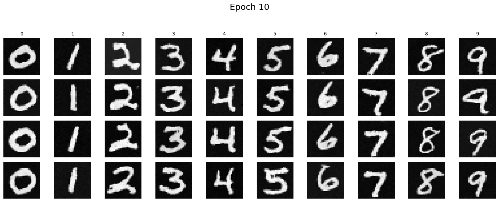
Samples after 10 epochs.
2.6 Removing the Learning Rate Scheduler
In the original implementation of the class-conditioned Flow Matching model, I used an
exponential learning-rate scheduler to stabilize the optimization process. The scheduler
naturally reduces the effective learning rate during later epochs, preventing divergence
when the model begins fitting high-frequency details. After removing the scheduler, I
observed that the model became noticeably less stable in the later phase of training, with
the loss curve showing oscillations and the generated digits becoming noisy.
To compensate for the loss of dynamic learning-rate decay, I adopted two simple but effective
techniques:
Reduced the fixed learning rate from 1e-2 to 3e-3, providing a more conservative update size throughout training.
Applied gradient clipping
(clip_grad_norm_ = 1.0) to prevent exploding gradients caused by large
velocity targets at high-noise timesteps.
This combination effectively mimics the stabilizing effect of the scheduler: the model trains
more smoothly and achieves nearly the same sample quality by epoch 10. The training process
is also easier to reproduce because it relies on a single fixed learning rate.
Training Code Snippet
optimizer = torch.optim.Adam(model.parameters(), lr=3e-3)
for epoch in range(num_epochs):
loss = model(x, c) # class-FM forward pass
optimizer.zero_grad()
loss.backward()
# prevent exploding gradients
torch.nn.utils.clip_grad_norm_(model.parameters(), max_norm=1.0)
optimizer.step()
Loss Curve (No Scheduler)
The following figure shows the full training loss without the scheduler:
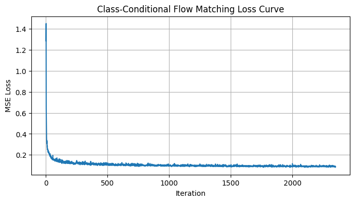
Sampling Results (No Scheduler)
Below are the class-conditioned samples generated after 1, 5, and 10 epochs.